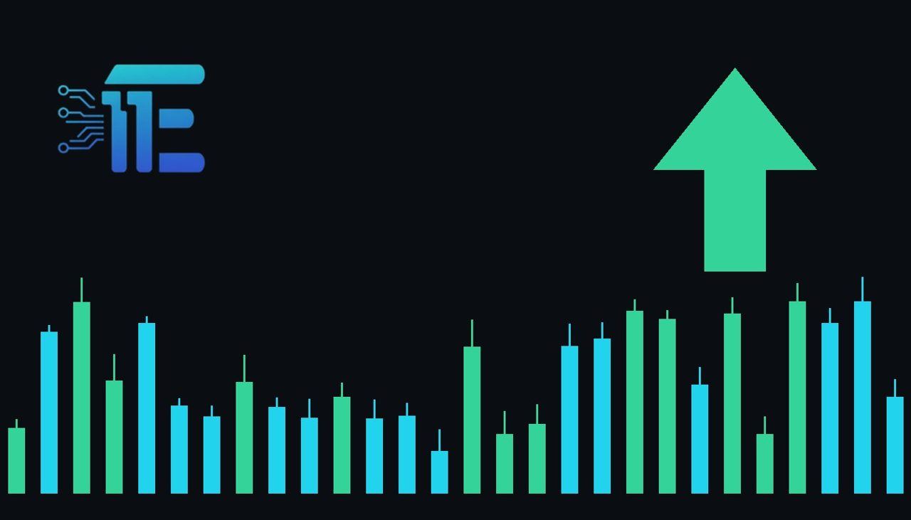

Bernstein Outlines Bullish Roadmap for Gold Heading Into 2027ប៊ើនស្តាញ (Bernstein) បង្ហាញទស្សនវិស័យវិជ្ជមានសម្រាប់មាសឆ្ពោះទៅឆ្នាំ ២០២៧
XAU/USD impact: ▲ Bullishផលប៉ះពាល់លើ XAU/USD: ▲ ឡើង

Bernstein outlines a bullish roadmap for gold as the Federal Reserve faces pressure heading toward 2027. This outlook provides key context for XAU/USD traders navigating recent market sell-offs.
ស្ថាប័ន ប៊ើនស្តាញ (Bernstein) បានរៀបចំផែនទីបង្ហាញផ្លូវវិជ្ជមានសម្រាប់មាស ខណៈដែល Fed ប្រឈមមុខនឹងសម្ពាធអត្រាការប្រាក់ឆ្ពោះទៅឆ្នាំ ២០២៧។ ទស្សនវិស័យនេះផ្តល់នូវបរិបទសំខាន់សម្រាប់អ្នកជួញដូរ XAU/USD ក្នុងការតាមដានទីផ្សារ។
Financial institution Bernstein has released a bullish roadmap for gold looking ahead to 2027. Despite a sharp sell-off experienced by the metal last week, Bernstein believes that gold could find significant support as macroeconomic conditions evolve over the next couple of years.
ស្ថាប័នហិរញ្ញវត្ថុ ប៊ើនស្តាញ (Bernstein) បានចេញផ្សាយទស្សនវិស័យវិជ្ជមានសម្រាប់តម្លៃមាសក្នុងការឈានឆ្ពោះទៅឆ្នាំ ២០២៧។ ទោះបីជាមានការធ្លាក់ចុះតម្លៃយ៉ាងខ្លាំងរបស់អ្នកលោហៈមានតម្លៃនេះកាលពីសប្តាហ៍មុនក៏ដោយ ក៏ស្ថាប័ននេះជឿជាក់ថា មាសអាចទទួលបានផលប្រយោជន៍នៅពេលដែលលក្ខខណ្ឌម៉ាក្រូសេដ្ឋកិច្ចមានការផ្លាស់ប្តូរក្នុងរយៈពេលប៉ុន្មានឆ្នាំខាងមុខនេះ។
The core of this outlook rests on future monetary policy expectations. Bernstein suggests that the Federal Reserve will face mounting pressure to pause or eventually reverse its interest rate hikes as early as 2027. Shifts in central bank policy expectations typically influence the US dollar and real yields, which serve as primary transmission channels for XAU/USD price action.
ស្នូលនៃទស្សនវិស័យនេះគឺផ្អែកលើការរំពឹងទុកនៃគោលនយោបាយ monetary policy នាពេលអនាគត។ ប៊ើនស្តាញ (Bernstein) បានបង្ហាញថា ធនាគារកណ្តាល Fed នឹងប្រឈមមុខនឹងសម្ពាធកាន់តែខ្លាំងក្នុងការផ្អាក ឬបញ្ច្រាសការដំឡើងអត្រាការប្រាក់របស់ខ្លួនឱ្យបានឆាប់ដល់ឆ្នាំ ២០២៧។ ការផ្លាស់ប្តូរការរំពឹងទុកលើគោលនយោបាយធនាគារកណ្តាលជាទូទៅតែងតែមានឥទ្ធិពលលើ ដុល្លារអាមេរិក និងផលចំណេញរតនាគារ ដែលជាកត្តាបញ្ជូនដ៏សំខាន់សម្រាប់ចលនាតម្លៃ XAU/USD។
For traders and market participants, this perspective offers a balanced view of potential market drivers. A shifting rate environment that weakens the US dollar and lowers bond yields would generally support higher gold prices by reducing the opportunity cost of holding non-yielding bullion. Conversely, if the Federal Reserve maintains an aggressive stance or delays rate adjustments, the resulting strength in the dollar and higher yields could continue to pressure the metal.
សម្រាប់អ្នកជួញដូរ និងអ្នកចូលរួមក្នុងទីផ្សារ ទស្សនវិស័យនេះផ្តល់នូវទិដ្ឋភាពមានតុល្យភាពនៃកត្តាជំរុញទីផ្សារដែលមានសក្តានុពល។ បរិយាកាសអត្រាការប្រាក់ដែលប្រែប្រួល និងធ្វើឱ្យ ដុល្លារអាមេរិក ចុះខ្សោយ ព្រមទាំងទាញអត្រាផលចំណេញចុះក្រោម ជាទូះទៅតែងតែគាំទ្រដល់តម្លៃមាសខ្ពស់ជាងមុន ដោយសារតែវាបន្ថយថ្លៃដើមឱកាសនៃការកាន់កាប់មាស។ ផ្ទុយទៅវិញ ប្រសិនបើ Fed រក្សាជំហររឹងរូស ឬពន្យារពេលការសម្របសម្រួលអត្រាការប្រាក់ ការកើនឡើងនៃប្រាក់ដុល្លារ និងផលចំណេញអាចបន្តដាក់សម្ពាធលើមាសដដែល។
As market dynamics unfold, participants should monitor upcoming economic data releases, Federal Reserve communications, and broader shifts in Treasury yields to gauge the timing of any potential monetary policy pivot.
ខណៈពេលដែលសក្ដានុពលទីផ្សារកំពុងលាតសន្ធឹង អ្នកចូលរួមគួរតែតាមដានការផ្សាយទិន្នន័យសេដ្ឋកិច្ចនាពេលខាងមុខ ការទំនាក់ទំនងពី Fed និងការផ្លាស់ប្តូរទូលំទូលាយនៃផលចំណេញរតនាគារ ដើម្បីវាយតម្លៃពេលវេលានៃការផ្លាស់ប្តូរគោលនយោបាយ monetary policy ដែលអាចកើតមាន។
Key takeawaysចំណុចសំខាន់ៗ
- Bernstein forecasts potential support for gold heading into 2027 based on expected Fed policy shifts.
- ស្ថាប័ន ប៊ើនស្តាញ (Bernstein) ព្យាករណ៍ពីការគាំទ្រដ៏មានសក្តានុពលសម្រាប់មាសឆ្ពោះទៅឆ្នាំ ២០២៧ ដោយសារការរំពឹងទុកនៃការផ្លាស់ប្តូរគោលនយោបាយ Fed។
- Lower interest rates and a softer US dollar typically benefit XAU/USD, while persistent rate hikes pressure prices.
- អត្រាការប្រាក់ទាប និង ដុល្លារអាមេរិក ទន់ខ្សោយជាទូទៅផ្តល់ផលប្រយោជន៍ដល់ XAU/USD ខណៈការដំឡើងអត្រាការប្រាក់ជាបន្តបន្ទាប់ដាក់សម្ពាធលើតម្លៃ។
- Traders are advised to watch US macroeconomic data and Fed communications for future rate trajectory clues.
- អ្នកជួញដូរត្រូវបានណែនាំឱ្យតាមដានទិន្នន័យម៉ាក្រូសេដ្ឋកិច្ចអាមេរិក និងការទំនាក់ទំនងរបស់ Fed ដើម្បីស្វែងរកតម្រុយអំពីគន្លងអត្រាការប្រាក់នាពេលអនាគត។
Original commentary by THE MARKET CODE, based on public reporting from Yahoo! Finance: GC=F News. Written with the help of AI. Educational only, not financial advice.
មតិវិភាគដើមដោយ THE MARKET CODE ផ្អែកលើការរាយការណ៍សាធារណៈពី Yahoo! Finance: GC=F News។ សរសេរដោយមានជំនួយពី AI។ មាតិកាអប់រំប៉ុណ្ណោះ មិនមែនជាដំបូន្មានហិរញ្ញវត្ថុទេ។